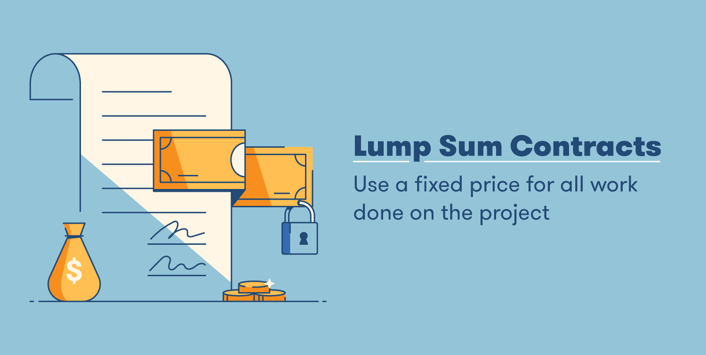
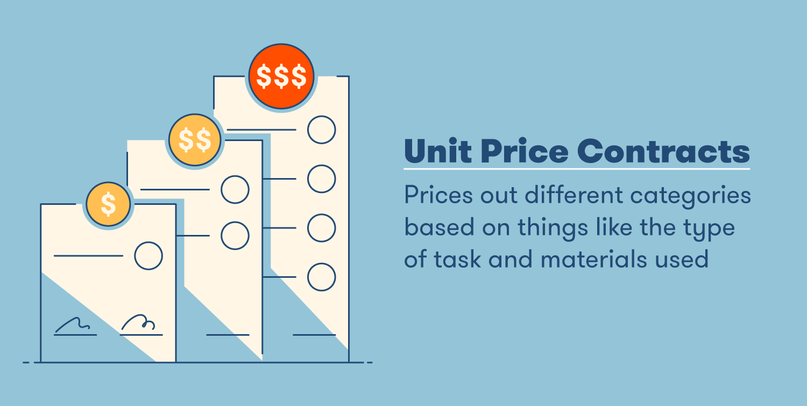
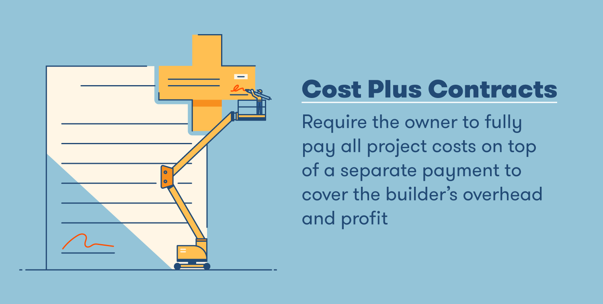
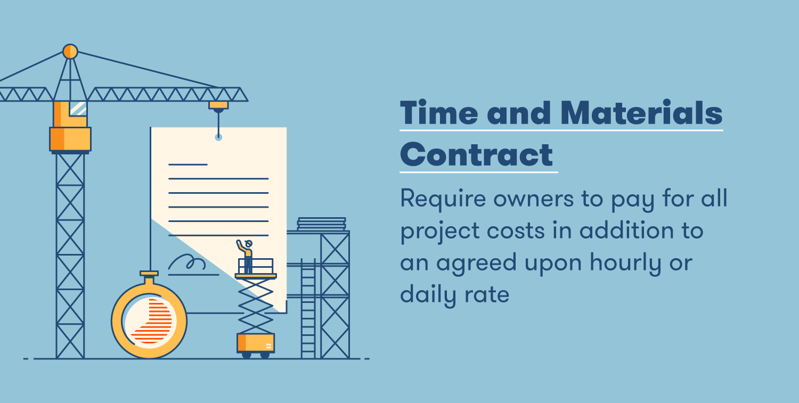

4 Types of Construction Contracts You Should Know

Understanding the different types of construction contracts is essential, as they determine what you pay, what you’re liable for, and many other aspects of the job. A contract protects both the builder and the owner by ensuring expectations are clear from the beginning and avoiding potential headaches caused by overages and other unexpected issues. There are many types of building contracts, and they are usually tailored to the needs of the project. To help you get familiar with your options, we explained the differences between different types of contract and when you should consider using each one for your projects. We use “builder” to refer to the entity carrying out the construction services and “owner” to refer to the entity contracting the builder to carry out construction services. Learn below about the four most common types of construction contracts.
1. Lump Sum Contract
A lump sum contract sets one determined price for all work done for the project. These construction contracts are also called “fixed price” or “stipulated sum” contracts.
Incentives are sometimes built into these contracts to reward the builder if the job is completed ahead of schedule. These agreements can also include penalties, sometimes called “liquidated damages,” for a job that is completed late. Owners typically use these types of contracts to steer clear of change orders for any additional or otherwise undetermined work. When signing a lump sum contract, the builder takes on additional risk since the owner is not obligated to pay more than the original price if the project goes out of scope, problems come up or any other changes occur during the project. Some lump sum contracts account for this by including separate allowances that cover unforeseen costs and changes. If an owner decides to use a lump sum contract on a project, builders can typically charge a higher fee to account for the additional risk they are taking on. Otherwise, any unforeseen costs can either eat into a builder’s profit or result in a project that may not be completed as envisioned.
2. Unit Price Contract
Unit price contracts typically emphasize the types of tasks being carried out in addition to the materials used on those tasks. This categorized style of pricing makes it easier for owners to evaluate each cost and allows builders to more accurately charge for each category..
This type of construction contract is not typically used for major construction projects and is more often used for smaller jobs like repair or maintenance work. With unit price contracts, it’s easier to adjust prices when the scope of work changes.
3. Cost Plus Contract
Cost plus contracts normally require the owner to pay for all project expenses, like the cost of materials, labor and any other projects costs. Additionally, these types of contracts will also include an agreed-upon amount or percentage that covers the builder’s overhead costs and profit that the owner also pays.
Depending on the type of cost plus contract, the owner may end up paying more than anticipated and therefore generally takes on more risk than the builder.
Different Types of Cost Plus Contracts
There are different types of cost plus contracts that cater to different project needs. Each contract type also reduces varying levels of risk for the owner. Here are some examples:# Cost plus fixed percentage:
Payment covers both the associated project costs and the builder’s profit and overhead. The amount paid for the builder’s profit and overhead is dependent on a fixed percentage of the project cost.# Cost plus fixed fee:
Payment includes coverage of the associated project’s costs as well as a fixed fee that covers the builder’s profit and overhead.# Cost plus with guaranteed maximum price (GMP) contract:
Payment includes the coverage of the associated project costs and a fixed fee that is paid up to a maximum cost. If the GMP is not reached, the difference between the total cost and GMP will not be paid out, which results in savings for the owner. The builder and owner may also agree to split the savings, providing the builder an incentive to keep costs under the GMP.4. Time and Materials Contract
Time and materials contracts define an hourly or daily rate for builders. In addition to paying this rate, owners also agree to pay any related project costs, which are noted in the contract as direct, indirect, markup and overhead costs.
Time and materials contracts are also typically used when the scope of work is unclear and carry less risk when used for small projects where owners can better estimate the project’s scope to anticipate the final cost. Price or project duration caps are also common for this contract to mitigate the owner’s risk.